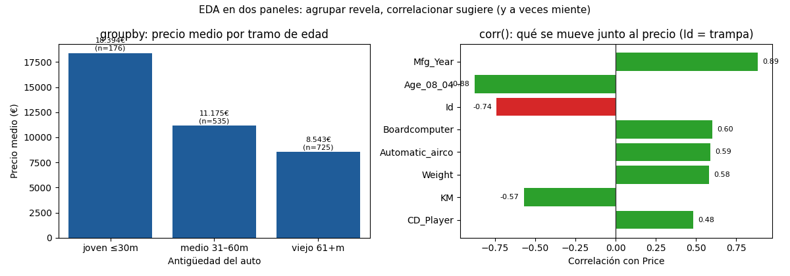

Unidad 2 · Exploración de datos · Lección 0006
EDA sistemático: describir, agrupar, correlacionar
Win de hoy: aplicar la receta de 3 pasos
(describe → groupby → corr) y salir con 3 hallazgos:
el gradiente de la edad, la trampa del Id y el NaN de Cylinders.
1 · EDA: mirar antes de modelar (con método)
EDA es la exploración sistemática: resumir cada columna, comparar grupos y medir relaciones antes de ajustar ningún modelo. Sin EDA, el modelo aprende a ciegas; con EDA, ya sabés qué esperar de él. La receta de hoy, siempre en este orden:
- Describir:
describe()por columna (centro, dispersión, extremos). - Agrupar:
groupby()por categorías (¿quién vale más: diésel o naftero?). - Correlacionar:
corr()entre numéricas (¿qué se mueve junto al precio?).
2 · Describir: media vs mediana (el diésel miente con la media)
El describe() da media,
mediana y cuartiles.
Cuando media y mediana difieren, hay sesgo.
El trío univariado lo completan la moda
(el valor más repetido: Gears = 5 en 1.390 autos) y el
desvío estándar
(distancia típica a la media: Price ≈ 3.630 €). Centro sin dispersión miente la mitad.
Mirá el precio por combustible:
| Fuel_Type | Media (€) | Mediana (€) | Casos | Lectura |
|---|---|---|---|---|
| Petrol | 10.679 | 9.940 | 1264 | Sesgo leve a la derecha (típico en precios) |
| Diesel | 11.295 | 8.950 | 155 | Sesgo fuerte: pocos diésel caros tiran arriba |
| CNG | 9.421 | 8.950 | 17 | Ojo: n=17, cualquier promedio es frágil |
Lección doble: el diésel “promedio” engaña (la mediana cuenta mejor la historia), y con 17 casos (CNG) ningún resumen es sólido. El EDA no solo describe: también avisa dónde no pisar.
df.groupby("Fuel_Type")["Price"].agg(["mean", "median", "count"]).round(0)3 · Agrupar: el gradiente de la edad (joven vale doble)
Para agrupar por una numérica primero se corta en tramos con
cut.
Tres tramos de Age_08_04 bastan para ver el patrón más fuerte del dataset:
tramos = pd.cut(df["Age_08_04"], [0, 30, 60, 81],
labels=["joven≤30", "medio31-60", "viejo61+"])
df.assign(t=tramos).groupby("t")["Price"].agg(["mean", "count"]).round(0)
# joven≤30 18394 (n=176)
# medio31-60 11175 (n=535)
# viejo61+ 8543 (n=725)Un Corolla joven promedia más del doble que uno viejo (18.394 € vs 8.543 €). Este gradiente va a reaparecer en regresión (U6): la edad será de las primeras variables del modelo. El EDA ya lo anticipó gratis.
4 · Correlacionar: qué se mueve con el precio (y dos trampas)
La correlación
(acá la de Pearson, fórmula en U6) dice qué columnas suben y bajan junto al precio. Top con Price:
df.select_dtypes("number").corr()["Price"].drop("Price").sort_values(ascending=False)
# Mfg_Year 0.885 ← año de fabricación
# Boardcomputer 0.601
# Automatic_airco 0.588
# Weight 0.581
# ...
# KM -0.570
# Id -0.738 ← ¡TRAMPA!
# Age_08_04 -0.877
# Cylinders NaN ← constante: sin variación no hay correlaciónId (−0,74): el número de fila “correlaciona” porque el
archivo viene ordenado (los baratos quedaron al final), no porque el número cause nada. Es una
correlación espuria:
el número más peligroso es el que parece decir algo. Trampa 2 — redundancia:
Mfg_Year (+0,89) y Age_08_04 (−0,88) son la misma información dos veces (año vs edad);
meter ambas al modelo es pagar dos veces (en U5/U6 se llama
multicolinealidad).5 · Figura: agrupar revela, correlacionar sugiere

Price; Id en rojo porque es espuria (orden de archivo, no causa).Regenerar la figura (mismo resultado versionado en assets/img/toyota/):
python scripts/make_figures.py --only eda-sistematico-toyota6 · Quiz (auto-chequeo inmediato)
7 · Fuente primaria y cierre
Para profundizar (1 fuente): Tan, Steinbach & Kumar, Introduction to Data Mining — capítulo 2 (datos: tipos, calidad, exploración y similaridad) (dmbook, también en RESOURCES.md del curso). Es la referencia para el EDA sistemático y la noción de calidad de datos.
¿Algo no quedó claro? Preguntame al agente: cuándo mirar la mediana en vez de la media, cómo armar tramos con sentido, o cómo olfatear una correlación espuria. Esa pregunta vale más que releer.